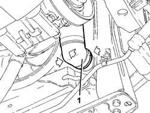
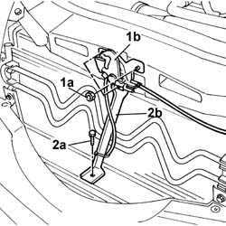
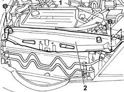
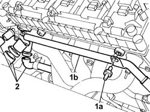
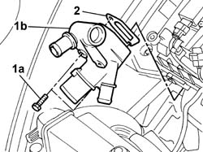
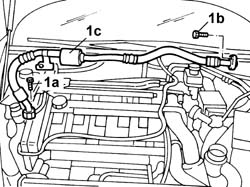

1088D22 WATER PUMP INLET CONNECTOR - R.R.
- Path
- Procedures > 10 ENGINE > 1088 ENGINE COOLING > 1088D COOLANT HOSES AND PIPES > 1088D22 WATER PUMP INLET CONNECTOR - R.R.
- Kind
- repair procedure (removal / refitting; the operation number is the code)
- Applies to
- engines: 2.0 TB, 2.4 20V; all production periods
- Interactive page
- https://sloeber94.github.io/elrnDB-lThss/en/#/95869
Applies to: engines: 2.4 20V; all production periods
 Removing
Removing
 Refitting
Refitting- Position the vehicle on a lift.
- Open the boot, remove the cover on the left hand side and disconnect the negative battery lead.
See in Op. 7040D50 ENGINE COMPARTMENT UPPER SOUND INSULATION SHIELD - R.R.
- Raise the vehicle on the lift.
See in Op. 7055B54 PROTECTION/GUARD under engine - R.R.
- Position a suitable container for collecting the engine coolant.
1. Disconnect the lower radiator pipe.

Applies to: engines: 2.4 20V; all production periods
See in Op. 1048A21 AIR INLET HOSE FROM INTAKE TO FILTER - R.R.
See in Op. 1048A23 Cold AIR INTAKE for air filter - R.R.
See in Op. 1016A40 Ignition COIL COVER on cylinder head - R.R.
See in Op. 1072C44 Exhaust manifold heat shield on BULKHEAD - R.R.
1. Undo the fixing nuts (1a) and remove the bonnet lock (1b) from the housing in the crossmember.
2. Undo the lower bolt (2a) and remove the lock reinforcement bracket (2b).

Applies to: engines: 2.4 20V; all production periods
1. Undo the retaining nuts.
- Remove the front crossmember.

Applies to: engines: 2.4 20V; all production periods
1. Undo the bolt (1a) and extract the rigid pipe (1b) from the connector.
2. Disconnect the pipes from the coolant inlet connector to the water pump.

Applies to: engines: 2.4 20V; all production periods
1. Undo the fixing bolts (1a) and remove the water pump inlet connector (1b).
2. Save the gasket underneath.

Applies to: engines: 2.4 20V; all production periods
Refitting
Removing- Position the water pump inlet connector, complete with gasket, and secure it using the bolts.
- Connect the coolant pipes to the connector and secure them using the bands.
- Fit the rigid coolant pipe on the connector and secure it using the bolt.
- Fit the upper front crossmember.
- Fit the bonnet lock on the crossmember complete with reinforcement bracket.
- Connect the lower radiator pipe.
See in Op. 1072C44 Exhaust manifold heat shield on BULKHEAD - R.R.
See in Op. 1016A40 Ignition COIL COVER on cylinder head - R.R.
See in Op. 1048A23 Cold AIR INTAKE for air filter - R.R.
See in Op. 1048A21 AIR INLET HOSE FROM INTAKE TO FILTER - R.R.
See in Op. 0010T20 Engine REFRIGERANT FLUID - Change
See in Op. 7055B54 PROTECTION/GUARD under engine - R.R.
- Connect the negative battery lead, then close the boot.
See in Op. 7040D50 ENGINE COMPARTMENT UPPER SOUND INSULATION SHIELD - R.R.
- Remove the vehicle from the lift.
Applies to: engines: 2.0 TB; all production periods
Removing
Refitting- Position the vehicle on a lift.
- Make sure that the ignition key is in the OFF position, then open the boot, remove the cover on the left hand side and disconnect the negative battery lead.
See in Op. 7040D50 ENGINE COMPARTMENT UPPER SOUND INSULATION SHIELD - R.R.
See in Op. 5040A10 Air conditioning coolant circuit - Drying and Repressurizing
See in Op. 7055B54 PROTECTION/GUARD under engine - R.R.
- Position a suitable container for collecting the engine coolant.
- Raise the lift.
1. Disconnect the lower radiator pipe.
Applies to: engines: 2.0 TB; all production periods
1. Undo the fixing bolt on the compressor (1a) and the bolt fixing the flange (1b) and remove the coolant return pipe (1c).

Applies to: engines: 2.0 TB; all production periods
See in Op. 1048A21 AIR INLET HOSE FROM INTAKE TO FILTER - R.R.
See in Op. 1048A50 air inlet pipe to turbocharger - r + r
See in Op. 1048A10 COMPLETE AIR FILTER -R.R.
See in Op. 1088E10 Radiator cooling FAN - R.R.
See in Op. 1072C44 Exhaust manifold heat shield on BULKHEAD - R.R.
See in Op. 1016A40 Ignition COIL COVER on cylinder head - R.R.
1. Undo the bolt (1a) and extract the rigid pipe (1b) from the connector.
2. Disconnect the pipes from the coolant inlet connector to the water pump.
Applies to: engines: 2.0 TB; all production periods
1. Undo the fixing bolts (1a) and remove the water pump inlet connector (1b).
2. Save the gasket underneath.
Applies to: engines: 2.0 TB; all production periods
Refitting
Removing- Position the water pump inlet connector, complete with gasket, and secure it using the bolts.
- Connect the coolant pipes to the connector and secure them using the bands.
- Fit the rigid coolant pipe on the connector and secure it using the bolt.
See in Op. 1016A40 Ignition COIL COVER on cylinder head - R.R.
See in Op. 1072C44 Exhaust manifold heat shield on BULKHEAD - R.R.
See in Op. 1088E10 Radiator cooling FAN - R.R.
See in Op. 1048A10 COMPLETE AIR FILTER -R.R.
See in Op. 1048A50 air inlet pipe to turbocharger - r + r
See in Op. 1048A21 AIR INLET HOSE FROM INTAKE TO FILTER - R.R.
- Fit the coolant return pipe and tighten the fixing bolt on the compressor and the flange fixing bolt.
- Connect the lower radiator pipe.
See in Op. 7055B54 PROTECTION/GUARD under engine - R.R.
See in Op. 5040A10 Air conditioning coolant circuit - Drying and Repressurizing
- Connect the negative battery lead, then close the boot.
See in Op. 0010T20 Engine REFRIGERANT FLUID - Change
See in Op. 7040D50 ENGINE COMPARTMENT UPPER SOUND INSULATION SHIELD - R.R.
- Remove the vehicle from the lift.
Topics linked from this page (11)
- 0010T20 Engine REFRIGERANT FLUID - Change
- 1016A40 Ignition COIL COVER on cylinder head - R.R.
- 1048A10 COMPLETE AIR FILTER -R.R.
- 1048A21 AIR INLET HOSE FROM INTAKE TO FILTER - R.R.
- 1048A23 Cold AIR INTAKE for air filter - R.R.
- 1048A50 air inlet pipe to turbocharger - r + r
- 1072C44 Exhaust manifold heat shield on BULKHEAD - R.R.
- 1088E10 Radiator cooling FAN - R.R.
- 5040A10 Air conditioning coolant circuit - Drying and Repressurizing
- 7040D50 ENGINE COMPARTMENT UPPER SOUND INSULATION SHIELD - R.R.
- 7055B54 PROTECTION/GUARD under engine - R.R.